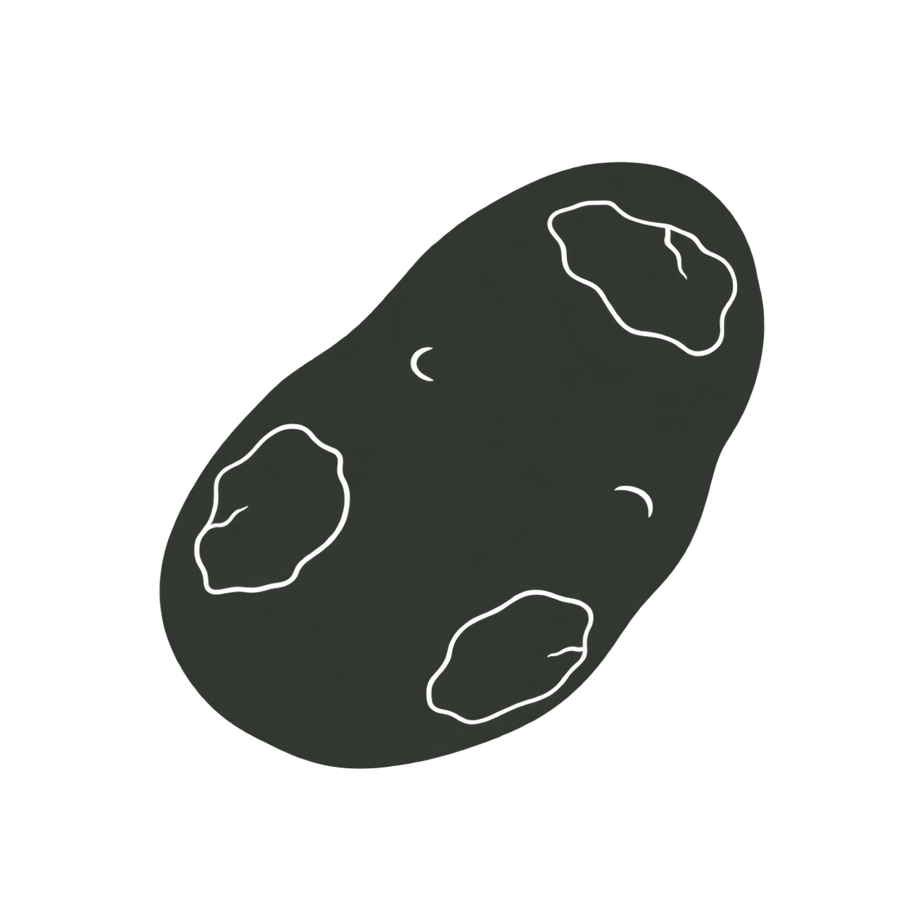

Blossom end rot
 Actual 32px icon sizeNEW PEPPER
Actual 32px icon sizeNEW PEPPERThe same simple end-rot cue, on the correct fruit.
Transparent PNGFilled shapes with restrained cut-out detail. Transparent backgrounds and adjustable ink colour.
Actual 32px icon sizeNEW PEPPERThe same simple end-rot cue, on the correct fruit.
Transparent PNG
Actual 32px icon sizeA potato with a few clear surface patches.
Transparent PNGThese two are review proofs only. The rejected line drawings are excluded from production.